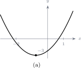

10.2 Probability of an event
Definition 10.4. If an event \(E\) has \(n(E)\) equally likely outcomes, drawn from a sample space with \(n(S)\) equally likely outcomes, then \[P(E)=\frac {n(E)}{n(S)}=\frac {\text {number of outcomes in } E} {\text {number of outcomes in } S}.\]
Note 10.5. The words “equally likely” carry the formula. Counting outcomes only measures probability when no outcome is favoured over another — a fair die, a well-shuffled deck. For a loaded die the counting is still correct but the answer is not.
10.2.1 Properties of the probability of an event
Let \(E\) be an event in a finite sample space \(S\).
- \(0\leq P(E)\leq 1\). Since \(E\) is a subset of \(S\), the count \(n(E)\) can be neither negative nor larger than \(n(S)\).
- If \(P(E)=0\) then \(E\) cannot happen; it is an impossible outcome. If you are \(15\) today, it is impossible that you will be \(20\) on your next birthday.
- If \(P(E)=1\) then \(E\) must happen; it is a certain outcome. If today is Monday, it is certain that tomorrow is Tuesday.
Note 10.6. A probability is never negative and never above \(1\). An answer of \(\frac {7}{4}\) or \(-0.2\) is not a possible probability, and finding one is a signal to go back and check the counting — usually an outcome has been counted twice.
Example 10.7. (a) Two coins are tossed. What is the probability that both land heads up?
(b) A card is drawn at random from a standard deck of \(52\). What is the probability that it is a picture card, that is a jack, queen or king?
Solution. (a) From the sample space \(S=\{HH,HT,TH,TT\}\) we have \(n(S)=4\), and only one outcome has both heads, so \(n(E)=1\): \[P(\text {two heads})=\frac {1}{4}.\]
(b) There are four suits, each containing one jack, one queen and one king, so \[n(E)=4\times 3=12,\qquad n(S)=52.\] \[P(\text {picture card})=\frac {12}{52}=\frac {3}{13}.\]
Solution. With two dice it helps to lay out all the possibilities in a grid, the rows giving the first die and the columns the second.

The grid has \(6\times 6=36\) cells, so \(n(S)=36\). The total is \(8\) in five of them: \[(2,6),\quad (3,5),\quad (4,4),\quad (5,3),\quad (6,2).\] \[\therefore \quad P(\text {total}=8)=\frac {5}{36}.\]
Note 10.9. \((2,6)\) and \((6,2)\) are counted as two outcomes, not one. There really are two ways for it to happen, depending on which die shows the \(6\). Only \((4,4)\) is a single way, which is why totals made from a double are less likely than they first appear.